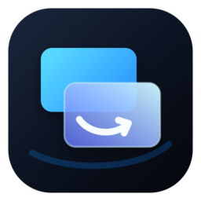
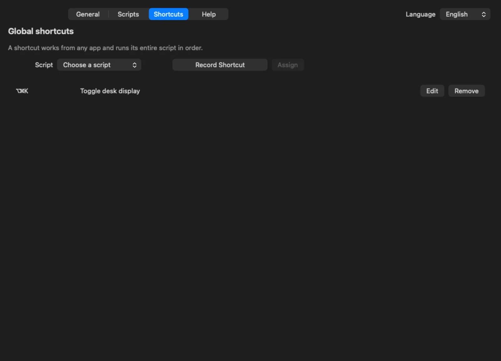

Visual builder
Add actions, state checks, and branches without writing code.

Mac UtilsA native macOS menu bar utility
Build reliable display actions with the mouse, combine them into a workflow, and run everything from any app.
Requires macOS 26 or later. English and Russian included.
Designed for the workflow you actually use
Add actions, state checks, and branches without writing code.
Run a full workflow while any application is active, then edit the assignment safely.
Make a display main, extend the desktop, or mirror another connected display.
Start the menu bar app automatically and see the live approval state reported by macOS.
No account, analytics, ads, cloud service, or collected data.
Use the system language or choose a language specifically for Mac Utils.
Universal toggle
Toggle by State reads the display mode at the moment you press the shortcut. It does not guess what happened last time.

Run from anywhere
Assign one native global shortcut to an entire script. If macOS rejects a replacement, the previous working shortcut stays active.
Built-in help
Onboarding explains the workflow, and the Help tab defines every display role and the mirror/extend recipe.
Privacy
Mac Utils stores scripts and shortcuts only in its local app container. It collects no personal or usage data and makes no network requests for product operation.
Read the privacy policySupport
Read the user guide or report a reproducible problem on GitHub. Include the macOS version and connected display layout, but never publish sensitive diagnostics.
Open support guide